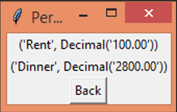
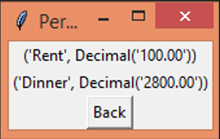

Projects
Divyang Disha Seva Trust (Website)
The "Divyang Disha Seva Trust" website was developed to provide a platform for disabled individuals to connect with volunteers and donors. This project was a significant undertaking as it required me to design and implement a user-friendly interface that is accessible to all users, including those with disabilities. I focused on creating a responsive design that works well on various devices, ensuring that the website is easily navigable regardless of the user’s location or device.
During the development process, I used HTML and CSS to build the structure and styling of the website. JavaScript was incorporated to add interactivity, such as form validations and dynamic content updates. One of the main challenges was ensuring that the website adhered to accessibility standards, including proper use of ARIA (Accessible Rich Internet Applications) attributes and keyboard navigation support.
This project not only enhanced my technical skills but also deepened my understanding of the importance of inclusivity in web development. The website has been instrumental in raising awareness and increasing donations, which has significantly impacted the lives of those it was designed to help.
Technologies Used: HTML, CSS, JavaScript
Links: Live Site | GitHub Repo

Personal Finance Manager
The "Personal Finance Manager" project was designed to provide users with a comprehensive tool to manage their personal finances effectively. This application allows users to track their expenses, set and manage budgets, and generate detailed financial reports. The goal was to create a user-friendly application that simplifies financial planning and helps users make informed decisions about their money.
One of the key challenges in this project was designing a system that could handle complex financial calculations while maintaining a simple and intuitive user interface. I used Python for back-end processing, particularly for handling the financial algorithms and generating reports. JavaScript was used on the front-end to provide real-time feedback to the user as they input data, enhancing the overall user experience.
Developing this project significantly improved my problem-solving skills and gave me practical experience in back-end development, particularly in areas such as data processing and user authentication. The project has been well-received by users, who appreciate its ease of use and the insights it provides into their spending habits.
Technologies Used: Python, HTML, CSS, JavaScript
Links: GitHub Repo

 
